N'avez vous jamais été frustré de vous apercevoir qu'il manque, dans votre boite à outils, un contrôle utilisateur que vous utilisiez auparavant avec un autre framework ? Dès lors, une réponse surgit lors de cette infâme découverte : créons notre propre contrôle utilisateur.
Oui, mais comment ?
Heureusement pour nous, il nous est possible de créer notre propre contrôle utilisateur grâce à une classe déjà toute faite, et tout est entièrement personnalisable. Nous allons, pas à pas, créer un contrôle utilisateur spécialement conçu pour nous, les Zéros : une zCheckBox !
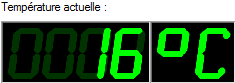
Contrôle utilisateur développé par moi-même
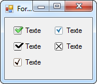
Contrôle utilisateur que nous développerons dans ce tutoriel
Afin d'être à l'aise dans la compréhension des codes, il est vivement conseillé d'avoir lu le tutoriel de nico.pyright sur le langage C#.NET, notamment vers la partie 3.
Je vous conseille de lire entièrement le tutoriel sans sauter d'étapes, sinon vous risquerez d'être très rapidement perdu. Je tiens à remercier Chiheb2012 pour le gros travail de relecture et de correction orthographique qu'il a effectué. Je remercie également Orwell pour son travail de validation ainsi que ses remarques qui ont permis d'améliorer ce tutoriel.
Comme je l'ai annoncé plus haut dans l'introduction, nous allons ensemble créer un contrôle utilisateur : une case à cocher.
C'est tout ? Je m'attendais à quelque chose de plus impressionnant !
Oui, mais ne vaut-il pas mieux commencer par quelque chose de simple sur un sujet inconnu ? Il se peut que certains manipulent déjà les contrôles utilisateurs et savent en créer sans problème. Mais lorsqu'on est débutant, c'est pas toujours facile de vouloir créer nos contrôles avec un déploiement parfait. C'est d'ailleurs pour cette raison que j'ai créé ce tutoriel.
Le tutoriel est un peu spécial, car il s'agit d'un TP intégré au cours. Tout au long du tutoriel, nous allons créer une case à cocher nommée zCheckBox ayant un autre style visuel que celui du framework .NET. L'intérêt de celui-ci sera surtout de créer une case à cocher plus belle que celles fournies par défaut. Mais rassurez-vous, j'ai adapté le cours à votre situation : tout est expliqué, chaque morceau de code est décortiqué de façon à ce que vous compreniez les éléments essentiels.
Et comme je suis gentil, je vous ai fourni l'outil plus les sources et le projet à la fin du tutoriel. Voici ce que nous créerons à l'issue de ce tutoriel :
Nous allons à présent créer notre contrôle. Ouvrez Visual Studio C#, créez un nouveau projet, et sélectionnez Bibliothèque de classes.
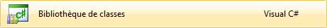
Une classe par défaut nous est offerte. Supprimez-la, et en faisant un clic droit sur votre projet dans l'explorateur de solutions, ajoutez-y un élément Contrôle utilisateur que vous nommerez par exemple zCheckBox.cs :
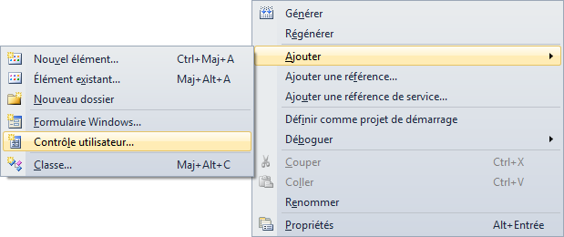
La partie Design
Vous accédez alors à la page Design de votre contrôle. Tout comme dans le Designer d'une fenêtre, nous allons placer les éléments déjà fournis dans la boite à outils pour créer notre case à cocher. Nous avons donc besoin de deux composants :
PictureBox : Ce composant va nous permettre d'afficher la case ainsi que la croix Vrai
Label : Comme dans un CheckBox, le texte de la case à cocher
Disposez-les de façon à reconnaître l’architecture d'une case à cocher : la case à gauche et le texte à droite.
Mais on doit créer nous même nos images ?
Oui, et c'est justement là l'intérêt de créer une case à cocher, nous allons pouvoir lui donner nos propres styles. Dans chaque style, nous avons 3 états pour la case à cocher :
NoEvent, lorsque la souris n’interagit pas avec la case
OnHover, lorsque la souris est sur le composant
OnClick, lorsque l'utilisateur clique sur la case
Il s'agit bien évidemment d'événements que nous créerons pour définir l'état du contrôle. Il y aura aussi un quatrième événement, OnRelease, lorsque le bouton de la souris est relâché, mais qui ne fait pas office d'état pour l'instant, car aucun effet visuel ne sera rajouté pour cet événement. Et pour chaque état, il y a une image. J'ai réalisé cinq styles de case à cocher ci-dessous que nous utiliserons (et que vous pourrez utiliser dans vos futurs programmes, si vous en avez le courage :p ). De gauche à droite, l'état est défini par NoEvent, OnHover, OnClick puis le symbole Checked.
Basic
Lighted
Ubuntu
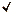
Kubuntu
System
Utilisons les ressources
Sachez que le résultat final sera généré sous la forme d'un fichier DLL (Dynamic Link Library) pour être directement utilisé dans un autre programme. Seulement, pour notre case à cocher, on va devoir utiliser des images, et ces images doivent se situer quelque part sur votre disque dur ! On pourrait très bien mettre les images en même temps que le fichier DLL, mais ça peut devenir vite encombrant et lassant s'il faut copier à chaque fois les images ! Heureusement, les ressources sont là pour rectifier le tir. En plus d'être simples à utiliser, elles vont être directement incluses dans notre fichier DLL, on pourra alors distribuer notre fichier librement sans problème de fichiers supplémentaires. Pour importer des ressources, je vous renvoie au tutoriel officiel de Hankerspace sur l'annexe Les ressources. Pour utiliser nos ressources en C#, en revanche, on n'utilisera pas les mêmes classes (et un langage différent entre autres ;) ).
Toutes les images que je vous ai fournies (mis à part les symboles) ont pour taille 14*14 pixels. Seulement, si vous avez aperçu l'image dans la partie précédente, le symbole est un peu décalé vers la droite : c'est pour donner un style (comme sur Mac par exemple). Notre PictureBox devra donc faire plus que 14 pixels en largeur. Je compte une largeur pour les symboles ayant au maximum 17 pixels en largeur, la PictureBox aura donc une taille de 14 pixels en hauteur et 17 pixels en largeurs (facile jusque-là). Je vais l'appeler pb_case. Pour le Label, c'est très simple, il suffit juste de le placer à droite de la case. Je l’appellerai txt_texte. C'est tout ce dont nous avons besoin pour la partie graphique du contrôle. L'intérêt ici, c'est comme dit précédemment de créer un style plus beau que celui proposé par le framework .NET. Voici ce que j'obtiens avec le designer Visual Studio :
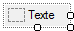
La partie code
Enfin nous allons coder ! Et pas qu'un peu. Dans la partie design, appuyez sur F7 pour dévoiler le code. Je vous conseille, dans chaque code, de mettre une entête qui définit l'auteur, l'utilisation de cette classe, la date de création, etc... permettant d'obtenir plus d'informations sur la classe qu'on lit, et c'est toujours bon de savoir quand elle a été créée. Si vous regardez, on remarque que notre classe hérite de UserControl :
public partial class zCheckBox : UserControl
En effet, il faut préciser que notre classe est un contrôle utilisateur, pour qu'elle hérite de ses fonctions, ses événements, mais surtout que notre classe soit utilisable en tant que contrôle.
Ce mot-clé magique permet de faire des blocs de code, autrement dit des régions pouvant être diminuées ou rétablies par le biais de petits carrés sur votre gauche. Je les utilise souvent pour rendre le code plus clair, et lorsque l'on veut rechercher par exemple une propriété, on sait déjà dans quelle partie la rechercher. Personnellement, j'ai horreur (pour des fichiers finaux) d'avoir des variables vers la fin, vers le milieu, un peu partout. Plus un code est organisé, plus il est compréhensible.
#region Déclaration des variables
// Toutes les variables ici et pas ailleurs
#endregion
J'ai mis 7 #region dans mon code, quelques-unes peuvent être supprimées, mais je fais ça pour avoir une lisibilité optimale (attention tout de même à ne pas en mettre une cinquantaine).
Commençons par définir les styles. Nous devrons donc créer une énumération publique que je vais nommer CheckBoxStyle pour définir les différents styles disponibles :
public enum CheckBoxStyle
{
Basic,
Lighted,
Ubuntu,
Kubuntu,
System
};
À présent, nous allons créer les variables de notre case à cocher.
Et comme nous n'héritons pas notre zCheckBox, il faut donc créer toutes les variables d'une case à cocher basique :
private bool _isChecked = false, _activeClick = true; // Le premier, l'état du zCheckBox, le second sera utilisé pour les événements
private CheckBoxStyle _style; // Le style de la case à cocher
private Image _currentBg, _currentHover, _currentClick, _currentTrue; // Les images selon le style défini
private string _text = "Texte"; // Le texte de la case à cocher
Pour les propriétés en revanche, je ne vais pas toutes vous les étaler, car le principe est très simple : un getter, un setter, nous avons notre propriété. Voici, par exemple, la propriété Checked :
/// <summary>
/// Obtient ou définit la valeur booléenne de la case à cocher
/// </summary>
public bool Checked
{
get { return _isChecked; }
set { _isChecked = value; }
}
Créez deux/trois propriétés supplémentaires telles que Text (pour le texte) ou Style (pour le style).
Les méthodes
Dans notre classe, toutes les méthodes seront privées afin de ne pas embrouiller le futur développeur et qu'il fasse une confusion avec une quelconque propriété. Nous avons donc un total de 5 méthodes :
Nom
Arguments
Fonction
SetCheckState
bool state
Modifie l'état booléen de la case à cocher
SetText
string texte
Modifie le texte de la case à cocher
ShowTruePicture
Aucun
Affiche l'image "Vrai"
HideTruePicture
Aucun
Cache l'image "Vrai"
ChangeStyle
CheckBoxStyle styleToChange
Change le style graphique de la case à cocher
Mais puisque l'on crée une méthode spécifique pour une propriété, il va falloir changer le setter des trois propriétés. Du coup, le setter de la propriété Checked devient :
set { SetCheckState(value); }
Faites de même pour les propriétés CheckBoxText (SetText(value)) et CheckBoxStyle (ChangeStyle(value)).
Méthode SetCheckState
Son fonctionne est assez simple à comprendre : elle permet de modifier l'état logique de la case à cocher, à savoir true ou false :
private void SetCheckState(bool state)
{
if (state) // Si l'état cible a pour value true
{
_isChecked = true;
ShowTruePicture(); // On affiche le symbole vrai
}
else
{
_isChecked = false;
HideTruePicture(); // On masque le symbole vrai
}
}
Dans cette méthode, l'argument state, l'état cible, est la nouvelle valeur que prendre la case à cocher.
Méthode SetText
Tout comme la méthode ci-dessous, celle-ci permet quant à elle de modifier le texte de la case à cocher :
_text = texte; // On modifie la valeur de la variable membre
txt_texte.Text = _text; // On modifie le texte du Label
Méthode ShowTruePicture
C'est l'une des méthodes les plus importantes, car c'est celle qui nous permettra de visualiser l'état de la case à cocher par l'intermédiaire d'images :
private void ShowTruePicture()
{
pb_case.Image = _currentTrue; // On met à jour la nouvelle image
}
Méthode HideTruePicture
Cette méthode permet à l'inverse d'effacer le symbole "Vrai" :
private void HideTruePicture()
{
pb_case.Image = null; // Aucune valeur n'est affectée à l'image de pb_case
}
En affectant la valeur null à mon pb_case, aucune image ne sera dessinée sur la PictureBox.
Mais dans ce cas, notre image de fond sera effacée ?
Non justement, et c'est ça l'avantage d'une PictureBox. Il y a deux propriétés concernant le dessin d'image dans ce contrôle : Image et BackgroundImage. Ainsi, j'utilise la seconde propriété pour dessiner le fond de ma case à cocher, ce qui fait que ma propriété BackgroundImage n'est pas modifiée si j'affecte la valeur null à ma propriété Image.
Méthode ChangeStyle
Celle-ci va nous permettre de modifier à tout moment le style de notre case à cocher. J'utilise donc un switch qui me permet de modifier les variables qui seront utilisées pour dessiner la case à cocher :
private void ChangeStyle(CheckBoxStyle styleToChange)
{
switch (_styleToChange) // Selon le style à changer
{
case CheckBoxStyle.Basic: // Cas du CheckBoxStyle.Basic, du ...
_currentBg = Resources.checkbox_basic; // État NoEvent
_currentClick = Resources.checkbox_click; // État OnClick
_currentHover = Resources.checkbox_hover; // État OnHover
_currentTrue = Resources.checkbox_true;
break;
case CheckBoxStyle.Lighted:
_currentBg = Resources.checkbox_2_basic;
_currentClick = Resources.checkbox_2_click;
_currentHover = Resources.checkbox_2_hover;
_currentTrue = Resources.checkbox_2_true;
break;
case CheckBoxStyle.Ubuntu:
_currentBg = Resources.checkbox_3_basic;
_currentClick = Resources.checkbox_3_click;
_currentHover = Resources.checkbox_3_hover;
_currentTrue = Resources.checkbox_3_true;
break;
case CheckBoxStyle.Kubuntu:
_currentBg = Resources.checkbox_4_basic;
_currentClick = Resources.checkbox_4_click;
_currentHover = Resources.checkbox_4_hover;
_currentTrue = Resources.checkbox_4_true;
break;
case CheckBoxStyle.System:
_currentBg = Resources.checkbox_5_basic;
_currentClick = Resources.checkbox_5_click;
_currentHover = Resources.checkbox_5_hover;
_currentTrue = Resources.checkbox_5_true;
break;
}
style = styleToChange; // On met à jour le style de la case à cocher
pb_case.BackgroundImage = _currentBg; // On affiche le nouveau style à l'écran
}
Le code concernant la case à cocher est maintenant terminé. Nous allons dès maintenant nous préoccuper des événements privés et publics. Comme d'habitude, je vous fais un petit tableau récapitulatif du gestionnaire d'événement.
Quelle est la différence entre un événement et un gestionnaire d'événement ?
Un événement est une action produite par l'utilisateur ou par un programme afin de déclencher un traitement. Ainsi, tous les événements sont réalisés, quoiqu'il arrive (par exemple, un clic souris est un événement). Mais si vous souhaitez réaliser un traitement suite à un événement, vous devez associer une méthode (ou fonction) à votre événement, et cette méthode est nommée gestionnaire d'événement.
Gestionnaire d'événement
Événement
zCheckBox_MouseEnter
Souris sur le composant
zCheckBox_MouseLeave
Souris quitte le composant / hors du composant
zCheckBox_MouseDown
Clic souris sur le composant
zCheckBox_MouseUp
Relâchement clic souris n'importe où
Associez ces quatre gestionnaires d'événements dans la partie Designer de votre zCheckBox. Le problème, c'est que ce code n'est pas tout à fait adapté à notre situation. En effet, les gestionnaires d'événements sont liés à notre zCheckBox, donc il s'agit seulement du fond du composant. Et la PictureBox et le Label n'ont aucun gestionnaire d'événement qui leur est associé. Prenez l'image suivante :
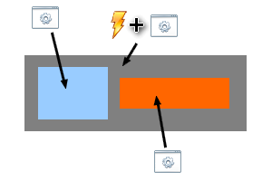
Chacun des composants est représenté par une couleur.
Gris : Il s'agit du zCheckbox. Ce composant possède à la fois du code, mais aussi des gestionnaires aux événements associés.
Bleu : C'est la PictureBox . Il n'y a que du code, mais aucun gestionnaire d'événement associé.
Orange : C'est le Label. De même, que du code, mais aucun gestionnaire d'événement associé.
Cela signifie que par exemple, lorsque la souris sera au-dessus du PictureBox, aucun gestionnaire d'événement n'est associé au contrôle, et donc aucune instruction ne sera exécutée. Il faut donc que tous les gestionnaires aux événements pour chaque contrôle soient les mêmes, et cela va se faire dans l'initialisation du contrôle :
foreach (Control _control in this.Controls)
{
control.MouseEnter += new EventHandler(zCheckBox_MouseEnter);
control.MouseLeave += new EventHandler(zCheckBox_MouseLeave);
control.MouseDown += new MouseEventHandler(zCheckBox_MouseDown);
control.MouseUp += new MouseEventHandler(zCheckBox_MouseUp);
// J'abonne les mêmes gestionnaires aux événements de chaque contrôle de mon zCheckBox, de manière à tous les capter
}
On utilise une boucle foreach, et donc ici, chaque contrôle contenu dans notre classe (ici la PictureBox et le Label) hérite des quatre événements spécifiés de celui-ci. Les événements seront les mêmes que ce soit pour n'importe quel contrôle dans notre zCheckBox.
Créons nos propres événements
Dans tous les contrôles, il y a forcément des événements, mais il arrive parfois que l'on veuille créer ses propres événements. L'exemple sera de créer l’événement CheckedChanged, qui interviendra lorsque la valeur de la case à cocher (vrai ou faux) change. Nous allons utiliser un délégué existant pour créer notre événement dans le cas où l'état booléen de la case à cocher changerait, le delegate EventHandler :
public delegate void EventHandler(Object sender, EventArgs e)
Bien sûr, il ne faut pas insérer cette ligne de code dans le fichier, puisque le délégué existe déjà. Notre délégué étant connu, nous pouvant créer l'événement à l'aide du mot clé event :
public event EventHandler CheckedChanged;
Enfin, il faut créer la fonction permettant de faire appel à notre événement :
public void OnCheckedChanged(EventArgs args)
{
if (CheckedChanged != null)
{
CheckedChanged(this, args);
}
}
Même si notre événement est maintenant prêt, il faut tout de même savoir quand l'appeler. L'état booléen de la case à cocher change lorsque le bouton de la souris est relâché. Il faut tout simplement appeler l'événement à la fin de la fonction MouseUp :
OnCheckedChanged(EventArgs.Empty); // On signale qu'un événement "CheckedChanged" s'est produit avec aucun argument (nous n'avons pas besoin d'utiliser un argument)
Les gestionnaires d'événements
Afin que l'utilisateur puisse interagir avec la case à cocher, nous devons coder nos gestionnaires d'événements pour savoir quelles actions doivent être exécutées.
Lorsque la souris rentre dans le composant
Le gestionnaire MouseEnter est utile dans notre cas, car il permet à la fois de modifier l'arrière-plan de la PictureBox, mais aussi de modifier une variable qui indique que la souris est entrée dans le composant. Autrement dit, à cet instant, il sera possible d'effectuer un traitement lors du clic souris.
private void zCheckBox_MouseEnter(object sender, EventArgs e)
{
pb_case.BackgroundImage = _currentHover; // État OnHover
_activeClick = true; // On signale qu'il est possible de cliquer
}
Lorsque la souris quitte le composant
À l'inverse du précédent gestionnaire, celui-ci s'exécute lorsque la souris quitte le composant. Ainsi, l'image d'arrière-plan NoEvent sera remplacée, et on indique qu'on ne peut plus effectuer de traitement si un clic souris se produit.
private void zCheckBox_MouseLeave(object sender, EventArgs e)
{
pb_case.BackgroundImage = _currentBg; // État NoEvent
_activeClick = false; // On signale qu'il n'est plus possible de cliquer
}
Lorsque l'utilisateur clique sur le composant
Dès que l'utilisateur clique sur le composant, on modifie l'image d'arrière-plan mais seulement si l'utilisateur a l'autorisation de cliquer.
private void zCheckBox_MouseDown(object sender, MouseEventArgs e)
{
if (_activeClick) // S'il est possible de cliquer
{
pb_case.BackgroundImage = _currentClick; // État OnClick
}
}
Pourquoi on ne modifie par l'état de la case à cocher maintenant ?
Une CheckBox du framework .NET change d'état lors du relâchement du clic souris. J'ai, dans le cas de la zCheckBox, respecté cette convention, mais vous pouvez très bien placer votre changement d'état ici.
Lorsque l'utilisateur relâche le clic souris
C'est donc dans ce gestionnaire d'événement que nous allons effectuer le changement d'état :
private void zCheckBox_MouseUp(object sender, MouseEventArgs e)
{
pb_case.BackgroundImage = _currentHover; // État OnHover
SetCheckState(!_isChecked); // L'état prend sa valeur inverse
OnCheckedChanged(EventArgs.Empty); // On signale qu'un événement "CheckedChanged" s'est produit avec aucun argument (nous n'avons pas besoin d'utiliser un argument)
}
Comme dans les précédents gestionnaires, l'arrière-plan sera modifié, et on signale la production de l'événement CheckedChanged. La seconde ligne est très pratique pour alléger le code. Pour que l'état de la case à cocher change, nous devons lui donner sa valeur inverse : c'est-à-dire que si la case à cocher avait pour valeur False, elle passerait à True et réciproquement. Le point d'exclamation (!) signifie NON, comme celle que l'on utilise dans les tests de condition, sauf qu'ici elle s'applique sur un argument. Le code suivant permet de réaliser la même chose :
if (_isChecked) // Si la case était à l'état "Vrai"
{
SetCheckState(false); // On met à l'état "Faux"
}
else
{
SetCheckState(true); // On met à l'état "Vrai"
}
Il serait donc préférable de choisir la première solution, puisque l'on économise quelques lignes de code.
Notre zCheckBox est maintenant finie. Seulement, vous ne pouvez toujours pas en profiter. Nous allons donc ajouter notre zCheckBox à notre boite à outils. Commencez par générer la solution à l'aide de la touche F6. Ensuite, ouvrez une nouvelle instance de Visual Studio C#, et créez cette fois-ci un projet Windows Forms quelconque. Dans votre boite à outils, vous pouvez apercevoir plusieurs onglets. Créons notre onglet spécifique à notre zCheckBox. Faites clic droit, puis cliquez sur Ajouter un onglet. Nommez le comme bon vous semble, puis, refaites clic droit et cliquez sur Choisir les éléments. Et là, c'est le drame ! Si vous avez un ordinateur un peu lent, ne pensez pas que Visual Studio C# a planté. Non, c'est juste qu'il y a vraiment beaucoup d'éléments à afficher, et que donc VC# freeze (ne réponds pas). Mais ne vous inquiétez pas, pour un ordinateur normalement constitué, cela ne dure pas plus d'une minute.
Une fois la fenêtre ouverte, cliquez sur le bouton Parcourir, et dirigez-vous dans le dossier Release de votre projet pour y trouver le fameux fichier DLL. Dès que vous l'avez, cliquez sur OK. zCheckBox apparaît alors dans l'onglet que vous avez créé, et vous pouvez l'utiliser normalement comme s'il s'agissait d'un contrôle quelconque. Et voilà un résultat concluant tous nos efforts :
Tout notre code reposant sur le principe d'une case à cocher est terminé. Nous allons voir ensemble quelques fonctionnalités supplémentaires pouvant être utiles.
Vous avez remarqué qu'une fois notre contrôle fini, le futur utilisateur ne saura pas à quoi servent les propriétés que nous avons créées (Style par exemple). Nous allons décrire ces propriétés grâce à des attributs dans notre classe zCheckBox. Dans un premier temps, nous allons donner une description à la propriété Style par l'intermédiaire de l'attribut Description. Dans notre exemple, le code à rajouter est le suivant :
[Description("Change le style de la case à cocher.")] // Ajouter cette ligne au-dessus de la propriété Style
Vous remarquerez alors que dans la fenêtre des propriétés, la description s'affiche en bas lorsque vous avez sélectionné la propriété Style. Toujours dans la fenêtre des propriétés, vous avez deux choix d'affichage en haut à gauche :
Par catégorie : les propriétés sont classées par catégorie (Texte, Comportement, ...).
Par ordre alphabétique : les propriétés sont classées par ordre alphabétique.
Comme nous n'avons pas assigné de catégories à nos propriétés, celles-ci se retrouvent dans la catégorie par défaut Divers. N'étant pas un grand admirateur du nom de cette catégorie, je propose que nous placions une catégorie appelée zCategory pour toutes nos propriétés. Nous utiliserons l'attribut Category (pas très dépaysant :) ) pour définir nos catégories (à noter que les catégories sont créées automatiquement si celles-ci ne sont pas déjà fournies) :
[Category("zCategory")] // Ajouter cette ligne au-dessus de chaque propriété
Il existe aussi l'attribut Browsable, qui ressemble beaucoup à Enabled. Cet attribut permet de savoir si la propriété peut-être modifiable dans la fenêtre des propriétés. Dans le cas contraire, la propriété sera invisible. Utile pour les propriétés en lecture seule :
[Category("zCategory"), Description("Change le style de la case à cocher."), Browsable(false)]
Il existe une dernière propriété, DesignerSerializationVisibility, qui permet d'ajouter des éléments à une collection dans le Designer de Visual Studio.
Les Designer Verbs
Les Designer Verbs sont des sortes de liens de commande qui apparaissent en bas de la fenêtre des propriétés :
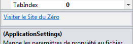
Quelques fois, ces liens peuvent ne pas être visibles. Pour les afficher, faites clic droit dans la fenêtre des propriétés, puis activez Commandes :
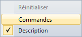
Mais avant de vous lancer dans la création d'une classe zDesignerVerbs afin de créer vos propres verbs, vous devez avant tout ajouter la référence System.Design à votre projet. Pour ce faire, faites clic droit sur votre projet dans l'explorateur de solutions, puis cliquez sur Ajouter une référence ...
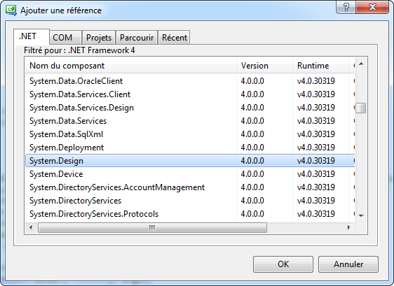
Enfin, pensez à rajouter les deux lignes suivantes pour pouvoir utiliser les espaces de noms dont nous aurons besoin :
using System.Windows.Forms.Design;
using System.ComponentModel.Design;
Mais là, vous avez deux jolis petits avertissements, dont un qui nous intéresse beaucoup :
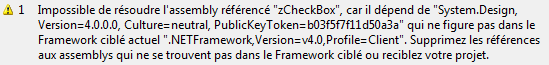
Pour l'instant, il n'est pas gênant. Mais vous verrez que par la suite, il le sera. Pour corriger ce problème, faites clic droit sur votre projet dans l'explorateur de solution, puis cliquez sur Propriétés. Dans l'onglet Application, retrouvez l'option Framework cible. Normalement cette option vaut .NET Framework 4.0 Client Profile. Et bien le voilà notre problème, c'est ce Client Profile qui nous gêne. Choisissez celui qui est juste au-dessus, celui sans le Client Profile :
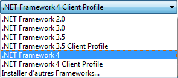
Une boite de dialogue vous demandera votre autorisation pour changer le framework cible et redémarrera votre projet. Tout est bon, plus d'avertissements, on peut continuer tranquillement.
Mais alors il sert à quoi le Client Profile ?
Il est utilisé pour avoir un déploiement le plus rapide possible. Il utilise donc le minimum d'assemblys pour exécuter notre projet. System.Design ne fait pas partie des ces assemblys pris en charge par le Client Profile. Plus d'informations sur le Framework .NET Profile Client.
Comme je l'ai annoncé plus haut, nous allons créer une classe nommée zDesignerVerbs qui héritera de la classe ControlDesigner. Nos Designer Verbs seront exposés par la propriété Verbs de cette classe sous la forme d'une collection de type DesignerVerbCollection, que nous devons remplir avant de renvoyer.
public override DesignerVerbCollection Verbs
{
get
{
DesignerVerbCollection verbs = new DesignerVerbCollection(); // On crée une nouvelle collection de Designer Verbs
verbs.Add(new DesignerVerb("Visiter le Site du Zéro", new EventHandler(VisitSdz))); // Add permet d'ajouter un Designer verb à la liste
return verbs; // On retourne la valeur au getter
}
}
Utilisez tout simplement la méthode Add pour ajouter chaque Designer Verb à cette collection. Le premier paramètre de la classe DesignerVerb est son nom, le second est le gestionnaire d'événement à exécuter lorsque l'utilisateur cliquera dessus. Pensez bien à mettre le mot-clé override devant la propriété, car il s'agit d'une substitution de la propriété virtuelle Verbs définie par la classe ComponentDesigner. Utilisez l'explorateur d'objets si vous souhaitez en savoir plus. Pour que la compilation fonctionne, nous devons définir ici le gestionnaire d'événement VisitSdz, simple méthode qui nous lancera le Site du Zéro après un clic :
La dernière action nécessaire pour faire apparaître nos Designer Verbs dans l'éditeur est de décorer notre classe zCheckBox avec l'attribut Designer en faisant référence à notre nouvelle classe :
[Designer(typeof(zDesignerVerbs))]
public partial class zCheckBox : UserControl
{
...
}
Comme pour tout à l'heure, lancez votre zCheckBox dans une Windows Forms pour admirer le résultat. Mais vous n'êtes pas encore au bout de vos peines. Car effectivement, lors de la compilation pour lancer votre projet Windows Forms, vous avez plusieurs erreurs correspondantes à votre zCheckBox et un avertissement assez bizarre qui plombe l'ambiance :
Encore la même erreur ! Il m'est dit que le problème vient de System.Design, alors on le supprime ?
Vous pouvez à présent admirer vos beaux Designer Verbs et proposer des actions bien plus complexes que celle-ci.
Les SmartTags
Les SmartTags (Balises Actives en Français) sont des petits menus qui apparaissent en haut à droite de votre contrôle lorsque vous cliquez sur une petite flèche pour l'ouvrir :
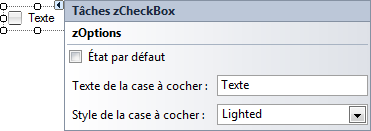
Avouez, ça donne envie.
Inutile ici de créer une nouvelle classe : en effet, pour le SmartTag, il faut utiliser une classe dérivée de DesignerActionList, tout comme nous l'avons fait avec ControlDesigner pour les DesignerVerbs. On peut donc par exemple renommer la classe zDesignerVerbs en zCheckBoxControlDesigner. Ainsi, nous utiliserons à la fois les DesignerVerbs et le SmartTag dans la même classe. Pour définir le contenu du SmartTag nous allons devoir implémenter une nouvelle classe dérivée de DesignerActionList :
public class zSmartTagElements : DesignerActionList
Son constructeur nécessite par ailleurs un paramètre de type IComponent, à transmettre au constructeur parent :
public zSmartTagElements(IComponent component) : base(component) { }
Cette classe joue globalement le rôle de passerelle entre le SmartTag et le contrôle zCheckBox. Elle permet de prendre correctement en charge les fonctionnalités "Annuler" (undo) et "Rétablir" (redo) par exemple.
Avant de commencer à définir nos éléments qui seront affichés dans notre SmartTag, nous allons tout d'abord le crée par l'intermédiaire de la propriété ActionsList :
public override DesignerActionListCollection ActionLists
{
get
{
DesignerActionListCollection list = new DesignerActionListCollection(); // On créer une nouvelle collection pour nos actions
zSmartTagElements designList = new zSmartTagElements(this.Control); // On récupère toutes les propriétés
list.Add(designList); // On ajoute toutes nos propriétés par l'intermédiaire de designList
return list;
}
}
Cette propriété nous permet ainsi d'afficher les éléments du SmartTag tout comme nous le faisions avec les Designer Verbs.
Pour chaque propriété de notre zCheckBox que l'on veut pouvoir définir via le SmartTag, il faut donc créer une propriété équivalente dans notre nouvelle classe zSmartTagElements. Ces propriétés sont à implémenter d'une manière un peu particulière : il faudra ici utiliser un casting pour le getter et la réflexion (un TypeDescriptor en particulier) pour le setter. Concrètement, ça ressemble à ça :
public bool Checked
{
get { return ((zCheckBox)this.Component).Checked; } // On obtient la valeur de la propriété Checked de la zCheckBox par casting
set
{
PropertyDescriptor prop = TypeDescriptor.GetProperties(this.Component)["Checked"]; // On utilise la reflection pour accéder à la propriété Checked de la zCheckBox.
prop.SetValue(this.Component, value); // On définit la valeur de propriété Checked
}
}
Faites de même avec les autres propriétés que vous souhaitez inclure dans votre SmartTag.
Il nous reste une chose à faire dans cette classe zSmartTagElements : nous devons substituer sa méthode GetSortedActionItems() afin de lui faire renvoyer la liste des éléments actionnables que l'on souhaite faire apparaître dans le SmartTag.
public override DesignerActionItemCollection GetSortedActionItems()
{
DesignerActionItemCollection items = new DesignerActionItemCollection(); // On crée une collection d'items pour notre SmartTag
// Utilisez Add() pour ajouter chaque élément
items.Add(new DesignerActionHeaderItem("zOptions"));
items.Add(new DesignerActionPropertyItem("Checked", "État par défaut"));
items.Add(new DesignerActionPropertyItem("CheckBoxText", "Texte de la case à cocher :"));
items.Add(new DesignerActionPropertyItem("Style", "Style de la case à cocher :"));
return items; // On renvoie cette collection remplie
}
Vous pouvez ajouter quatre types d'éléments :
DesignerActionPropertyItem : Affiche ou modifie les propriétés indiquées.
DesignerActionHeaderItem : Crée un groupe de propriétés.
DesignerActionTextItem : Affiche un texte.
DesignerActionMethodItem : Appelle une méthode.
N'oubliez pas de mettre à jour l'attribut présent à l'entête de la classe zCheckBox pour que vos Designer Verbs et vos SmartTags s'affichent en même temps.
[Designer(typeof(zCheckBoxControlDesigner))] // Affiche les DesignerVerbs et les SmartTags
public partial class zCheckBox : UserControl
{
...
}
Vous devriez maintenant apercevoir vos DesignerVerbs et votre SmartTag dans le concepteur de vues. :)
Afficher une icône dans la boite à outils
Comme vous avez pu le remarquer, beaucoup de contrôles de votre boite à outils disposent d'une icône afin d'être plus facilement identifiables. Et bien sachez que vous pouvez faire de même grâce à l'attribut ToolboxBitmap. Il existe plusieurs définitions :
Type des arguments
Rôle des arguments
String
Chemin de l'icône
Type
Assembly dont l'icône voulue y est incluse en tant que ressource incorporée.
Type, String
Assembly dont l'icône voulue y est incluse en tant que ressource incorporée et chemin de l'icône.
Pour cet exemple, nous utiliserons la troisième définition. À présent, nous allons ajouter l'icône souhaitée dans le projet Visual Studio. Pour ce faire, vous devez utiliser un fichier .bmp ou .ico pour l'icône, et celle-ci doit avoir une taille de 16 * 16 pixels. Dans le cas présent, j'utilise une image déjà présente dans notre contrôle, mais j'ai modifié sa taille et enregistré celle-ci sous une autre image dont le nom est zCheckBox_ico.ico :
Avant d'ajouter l'attribut permettant d'afficher l'icône, nous allons devoir commencer par ajouter l'image à notre projet. Pour ce faire, faites clic droit sur le nom du projet puis Ajouter -> Élément existant ... Choisissez ensuite votre icône puis cliquez sur valider. Même si notre image est présente dans le projet, nous ne pouvons toujours pas l'utiliser : en effet, afin d'avoir toujours accès à l'icône, vous devez l'ajouter en tant que ressource incorporée, sans quoi vous n'aurez pas accès à l'image. Pour ce faire, vous avez juste à sélectionnez votre icône puis à choisir l'option Ressource incorporée dans la propriété Action de génération :
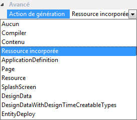
À présent, notre icône est bien présente dans notre projet, et sera incorporée dans la DLL lors de la génération de celle-ci. Dès maintenant, ajoutons l'attribut pour associer l'image au contrôle :
Vous pouvez voir que créer un contrôle utilisateur peut-être très facile, et surtout très utile dans certains cas. Même si on passe la moitié du temps pendant le tutoriel à créer une case à cocher, cela vous permet de comprendre comment fonctionne un contrôle utilisateur. Il est possible de créer d'autres contrôles qui n'existent pas dans le framework .NET. J'avais pensé à créer une RangeTrackBar, mais j'ai ensuite compris que c'était beaucoup trop long à créer, et donc beaucoup trop de code. J'ai préféré faire quelque chose de simple, pour un sujet simple. :)
Épatez-moi, postez vos belles créations sur les forums et partagez-les !